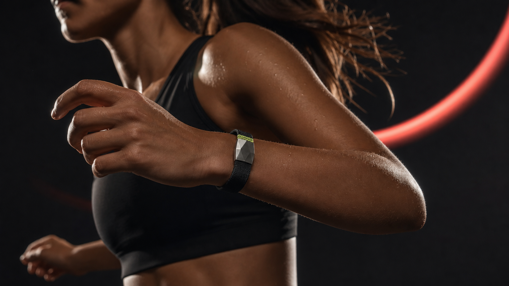
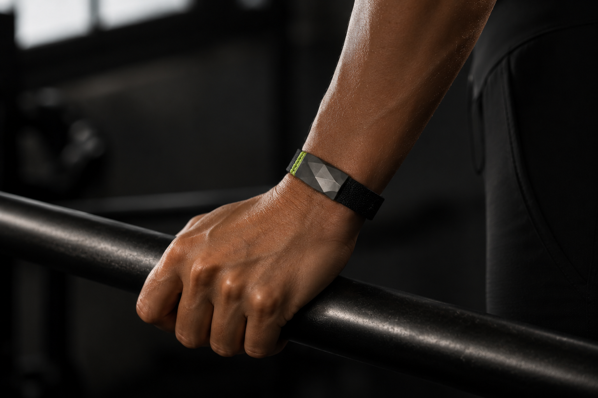

Restore
How completely your body reset overnight.
82
/ 100
PULSE is the screenless performance band that turns your body’s quiet signals into your next smartest move.
No endless dashboards. Just the signals that help you decide when to push, pause, or rebuild.
How PULSE makes the call ↗How completely your body reset overnight.
Your live capacity to take on intensity today.
Movement that counts, from a walk to your hardest set.
A featherweight knit band, precision sensor array and a clasp that locks in without locking you down.
Continuous heart, temperature, sleep and movement signals reveal your individual rhythm—then PULSE translates it into a plan.
Know your dose before you chase a number.
See the quality underneath every night.
Patterns from your physiology, not a mood label.
PULSE is built around real rhythms, not someone else’s routine. Worn by people who care about their potential—and their pace.

“It showed me I was training hard on a body that had already said no.”
Small signal. Big shift. That’s the PULSE effect.
PULSE X1 was made for the space between intention and action. It turns the signals your body is already giving you into a clearer read on how you move, recover and show up—without asking for more attention than it earns.
From an early commute to a late-night workout, it tracks the rhythm beneath your routine: heart rate, sleep, stress, movement and the quiet shifts that can make tomorrow feel different from today. Not to turn life into a dashboard. To make your next choice a little more informed.
There is power in technology that knows when to step back. With a lightweight silhouette, lasting battery and an interface that makes the important things easy to find, PULSE X1 feels less like another device and more like a considered part of your day.
Always-on sensing finds the patterns that are easy to miss when life is in motion.
From focused training to everyday momentum, PULSE X1 keeps pace without getting in the way.
Premium materials, an ultra-bright display and up to 14 days of power, ready for the long run.
Quietly capable. Beautifully considered. Built around you.
Everything in PULSE X1 is tuned to make the everyday feel more intentional—helping you build momentum, understand recovery and stay connected without breaking your flow.
Continuous heart rate, SpO₂, stress, breathing and sleep tracking reveal a richer picture of your wellbeing, hour by hour.
Run, lift, ride, swim, stretch or simply walk it out. PULSE X1 recognises the effort and keeps your progress in view.
A vivid 1.72-inch AMOLED display brings your health, workout and notification essentials into crisp, effortless focus.
Up to 14 days of typical use means less time at the charger and more continuity in the story your body is telling.
Calls, messages, calendar prompts and weather updates arrive when useful, so your phone can stay in your pocket.
Smart analysis turns activity, sleep and recovery into timely recommendations that make healthy habits easier to keep.
A refined aluminum frame and soft, skin-friendly strap make PULSE X1 feel at home from first meeting to final set.
5 ATM water resistance and a seamless companion app mean your data—and your momentum—can move wherever you do.
PULSE X1 is not here to make you optimise every second. It is here to help you feel the difference that paying attention can make.
Get PULSE in Graphite with the all-weather Limelight weave. Ships with the PULSE app and a year of advanced insight included.
Join the PULSE reservation list for first access to the X1 release and product updates that matter.
We’ll be in touch when the first release is ready.